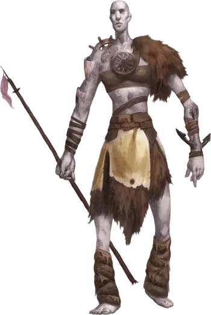

Каменный великан сноходец
Stone Giant Dreamwalker
Огромный Великан (Каменный великан), хаотично-нейтральный

Класс Доспеха 18 (природный доспех)
Хиты 161 (14к12 + 70)
Скорость 40 футов
| мод | спас | ||
|---|---|---|---|
| СИЛ | 23 | +6 | +6 |
| ЛОВ | 14 | +2 | +6 |
| ТЕЛ | 21 | +5 | +9 |
| мод | спас | ||
|---|---|---|---|
| ИНТ | 10 | +0 | +0 |
| МДР | 8 | −1 | +3 |
| ХАР | 12 | +1 | +1 |
Навыки Атлетика +14, Восприятие +3
Иммунитет к состояниям очарование, испуг
Чувства тёмное зрение 60 футов, пассивное Восприятие 13
Языки Общий, Великаний
Опасность 10 (5900 опыта)
Бонус мастерства +4
Среда обитания Горы, Побережье, Холмы
Особенности
Шарм сноходца. . Враг, который начинает ход не далее 30 футов от великана, должен совершить спасбросок Харизмы Сл 13, если великан дееспособен. При провале существо очаровано великаном. Существо, очарованное таким образом, может повторять спасбросок в конце каждого своего хода и окончить эффект при успехе. Однажды преуспев существо получает иммунитет к Шарму Сноходца этого великана на 24 часа.
Действия
Мультиатака. Гигант совершает две атаки своей палицей.
Палица. . Рукопашная атака оружием: +10 к попаданию, досягаемость 15 футов, одна цель. Попадание: 19 (3к8 + 6) дробящего урона.
Касание окаменения. . Гигант касается одного Среднего или меньше существа в 10 футах от себя, которое им очаровано. Цель должна пройти спасбросок Телосложения Сл 17. При провале цель окаменевает и гигант может приклеить её к своему каменному телу. Заклинание высшее восстановление [greater restoration] и другая магия, которая может снять окаменение, не работает на этом существе, прикрепленном к гиганту, если только гигант не умер. В таком случае магию работает нормально и освобождает окаменевшее существо от этого состояния.
Камень. . Дальнобойная атака оружием: +10 к попаданию, дистанция 60/240 футов, одна цель. Попадание: 28 (4к10 + 6) дробящего урона. Если цель является существом, то она должна успешно пройти спасбросок Силы Сл 17 или быть сбитой с ног.
Описание
Мир поверхности – это чужой мир для каменных гигантов: переменчивый, временный, подверженный дующим ветрам и внезапным дождям. Он так же дико меняется как и сон и они так к нему и относятся. Ничто там не постоянно, значит ничто не реально. То, что происходит на поверхности не имеет никакого значения. Обещания и сделки, сделанные там, чтить не обязательно. Жизнь и даже искусство там менее ценны.
Обитатели Сна. Каменные гиганты иногда отправляются на задания в мир поверхности, ищут вдохновение для своего искусства, прерывают десятилетнюю скуку или просто из любопытства. Некоторые из тех, кто отправляется на задание позволяют себе заблудиться во сне. Других каменных гигантов отправляют на поверхность в наказание. Вне зависимости от причин, если они не укроются под камнем, то такие индивиды могут стать сноходцами.
Сноходцы занимают странную нишу уважения вне уклада каменных гигантов. Их считают изгоями, но их знакомство с миром поверхности делает их ценными гидами, а их проницательность может помочь другим каменным гигантам осознать опасности жизни во сне.
Безумные Скитальцы. Сноходцы сходят с ума от изоляции, стыда и постоянного чужеродного окружения, и это безумие впивается в мир вокруг них, воздействуя на существ, подошедших слишком близко. Они верят, что живут во сне и у их действий нет никаких реальных последствий, так что сноходцы действуют так как им хочется, становясь силами хаоса. Во время путешествия по миру они собирают объекты и существ, которые кажутся особенно значимыми для их помутившихся разумов. Со временем собранные вещи врастают в их тело и заключаются в камне.
См. дополнительно статью: "Бестиарий: Великаны"